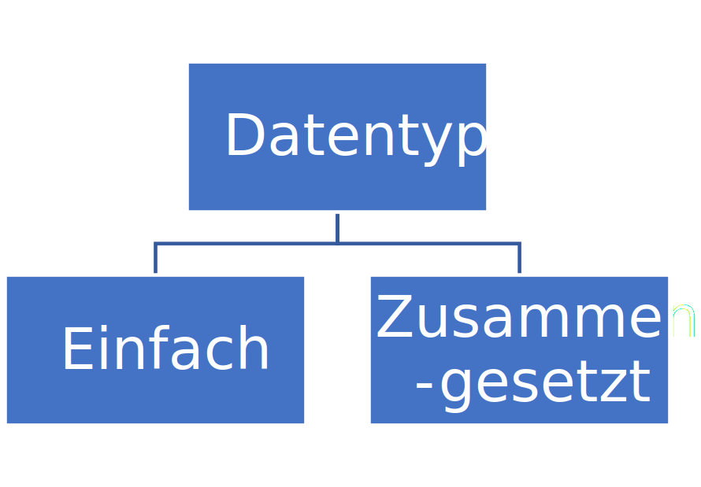
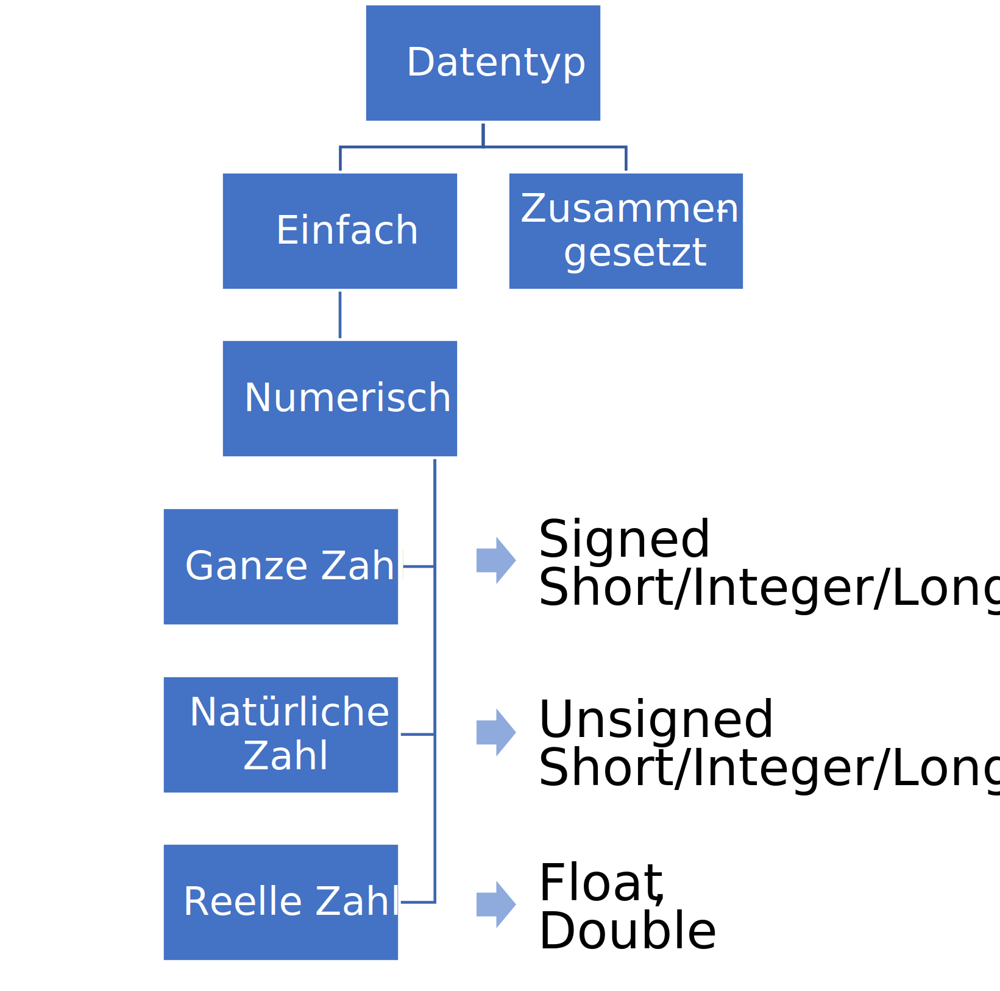
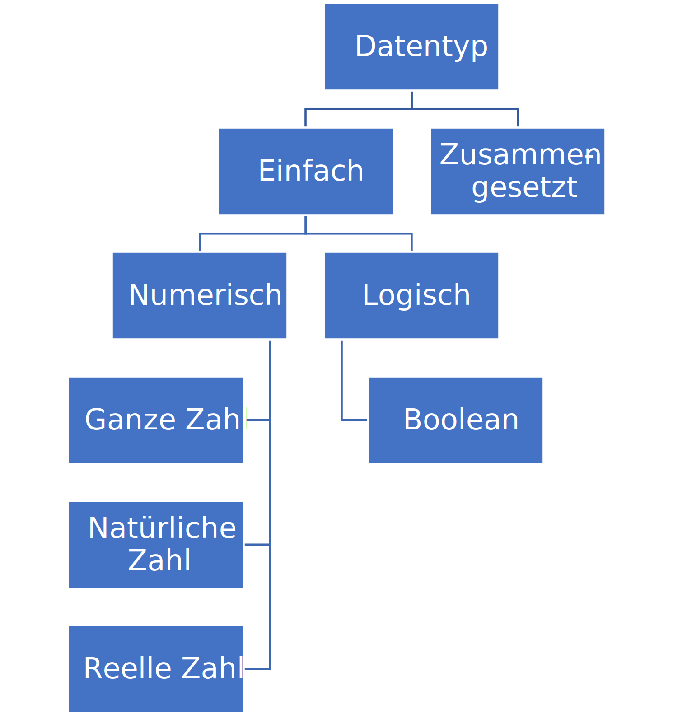
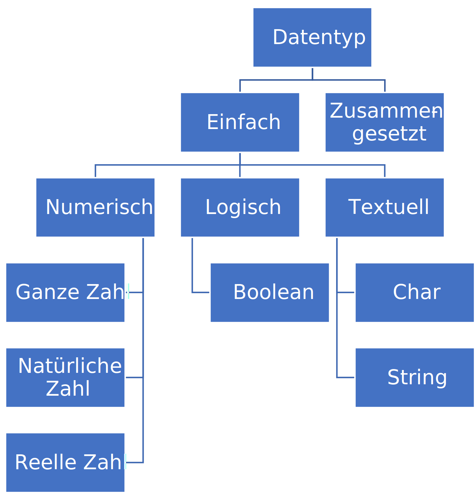
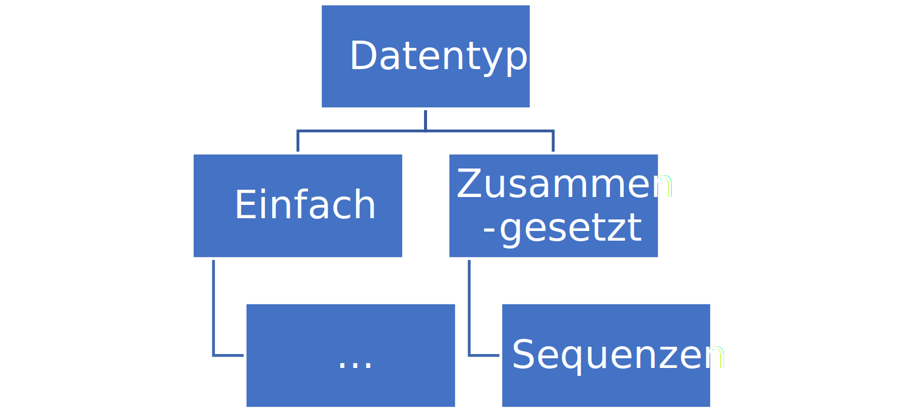
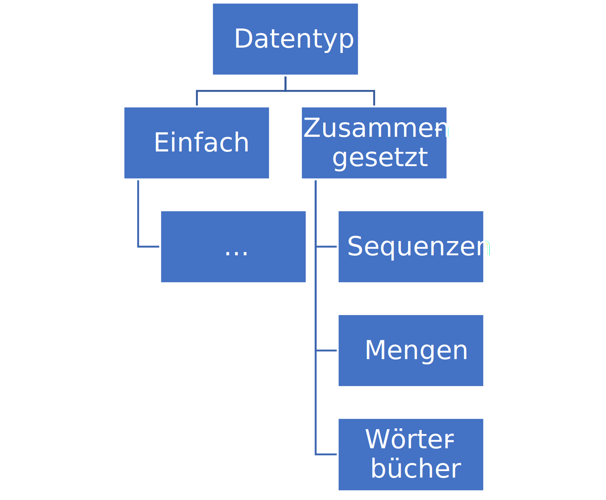
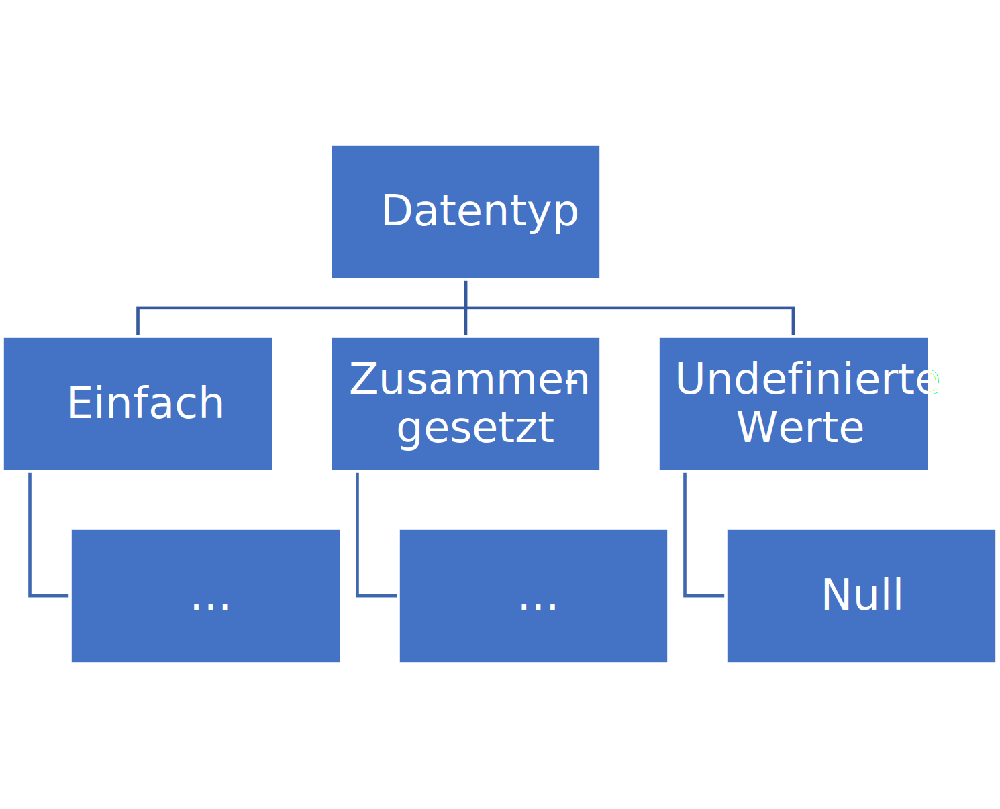

Datentypen#

The definition of ‘insanity’ in programming is doing the same thing over and over again and expecting different data types
— Linus Torvalds
Folien#
Variablen in Python#
Fast alle Programmiersprachen benutzen Variablen, um Werte abzuspeichern. Eine Variable ist dabei eine Zuweisung eines Wertes zu einem Namen. Intern verweist dieser Name dann auf die Speicheradresse im Arbeitsspeicher des Programmes, wo der Wert gespeichert ist. Dadurch kann man bei der Programmierung mit dem Namen der Variable arbeiten, ohne sich um die genaue Speicheradresse kümmern zu müssen.
Bei der Programmierung ist eine Variable ein Wert, der bei der Ausführung eines Computerprogramms auftritt und meist verändert werden kann. Eine Variable wird normalerweise im Quelltext durch einen Namen bezeichnet, hat einen Datentypen und eine Adresse im Speicher des Computers.
Neben Variablen gibt es auch Konstanten. In den meisten compilierten Programmiersprachen gibt es spezielle Syntax, um Konstanten zu definieren, da diese direkt in den Programmcode hinterlegt werden und nicht im Arbeitsspeicher des Programmes.
Eine Konstante ist ein Wert, der nicht verändert werden kann, nachdem er einmal zugewiesen wurde.
In Python gibt es keine speziellen Konstanten, aber es ist üblich, Variablen, die als Konstanten verwendet werden sollen, in Großbuchstaben zu schreiben, um sie von normalen Variablen zu unterscheiden. Sowohl Konstanten als auch Variablen haben einen Datentyp, der angibt, welche Art von Wert sie speichern können.
Der Datentyp einer Variable bestimmt den Typ des Wertes, der in der Variable gespeichert ist und welche Operationen auf diesem ausgeführt werden können. Z.B. ob es sich um eine Zahl, einen Text oder eine Liste handelt.
Der Datentyp einer Variable wird in Python automatisch bestimmt, wenn der Wert zugewiesen wird. Deshalb nennt man Python auch eine dynamisch typisierte Sprache. Das heißt, dass wir den Datentypen einer Variable nicht vorher festlegen müssen, sondern er dynamisch durch Zuweisung eines Wertes zur Variable festgelegt wird. In anderen Programmiersprachen muss der Datentyp einer Variable oft explizit deklariert werden, bevor der Wert zugewiesen wird. Diese nennt man auch statisch typisierte Sprachen. Sie gelten als sicherer und fehlerfreier, da der Datentyp einer Variable bereits zur Compile-Zeit überprüft wird.
Eine Zuweisung geschieht durch den ‘=’ Operator auf dessen linker Seite immer der Variablenname steht und rechts der Wert, der zugewiesen werden soll. In Python können Variablen beliebige Namen haben, solange sie den Regeln für Bezeichner entsprechen. Ein Bezeichner darf nur Buchstaben, Ziffern und Unterstriche enthalten, darf nicht mit einer Ziffer beginnen und darf keine reservierten Schlüsselwörter der Programmiersprache verwenden.
nummer = 1 # variablenname = wert
Der Wert einer Variable kann mit print(variablenname) angezeigt werden
print(nummer)
1
In einem Notebook, wie diesem, wird automatisch auf die letzte Code-Zeile in einem Code-Block ein print() angewendet. Also können wir auch schreiben
nummer
1
Grundsätzlich sollte man bei der Benennung von Variablen darauf achten, dass sie aussagekräftig sind und den Inhalt der Variable beschreiben. Das erleichtert das Verständnis des Codes und die Wartung des Programms. Es gibt hierbei einige Regeln
Verwenden Sie Namen, die die Bedeutung und den Inhalt der Variablen klar vermitteln.
Vermeiden Sie übermäßig generische Namen wie “Daten” oder “v”.
Halten Sie die Namenskonventionen in Ihrem Code konsistent.
Verwenden Sie Kleinbuchstaben mit Unterstrichen (_) zur Trennung von Wörtern (Snake Case), z.B.
meine_variable.Vermeiden Sie Sonderzeichen wie ä, ö, ü, ß da diese in der Zeichenkodierung Probleme verursachen können.
Verwenden Sie keine reservierten Schlüsselwörter der Programmiersprache als Variablennamen (z.B.
if,for,while).Vermeiden Sie Abkürzungen oder Akronyme, es sei denn, sie sind allgemein verständlich (z.B. “BIP”).
Streben Sie nach einem Gleichgewicht zwischen Klarheit und Kürze.
Hier sind einige Beispiele für gute und schlechte Variablennamen:
Gut |
Schlecht |
Beschreibung |
|---|---|---|
age |
a |
Steht eindeutig für das Alter einer Person. |
first_name |
fn |
Beschreibt eindeutig den Vornamen. |
birth_year |
by |
Eindeutig und verständlich für das Geburtsjahr. |
email_address |
Verdeutlicht, dass es sich um eine E-Mail-Adresse handelt. |
|
is_on |
on |
|
product_list |
products |
Macht deutlich, dass es sich um eine Liste handelt. |
score_total |
score |
Zeigt, dass es sich um die Gesamtsumme handelt. |
user_count |
count |
Gibt an, dass es sich um die Anzahl der Nutzer handelt. |
Datentypen#
Es gibt verschiedene Datentypen, die in Python und in Programmiersprachen allgemein verwendet werden können. Man unterscheidet einfache und zusammengesetzte Datentypen. Einfache Datentypen (Primitive Datentypen) können nur einen Wert des entsprechenden Wertebereichs aufnehmen. Zusammengesetzte Datentypen (Komplexe Datentypen) sind ein Datenkonstrukt, welches aus einfacheren Datentypen besteht. Da sie theoretisch beliebig komplex werden können, werden sie auch häufig schon zu den Datenstrukturen gezählt.
{width=250px}
Der Datentyp einer Variable wird mit type(variablenname) bestimmt und mit print(type(variablenname)) ausgegeben.
print(type(nummer)) # in einem program nutzt man die print() funktion um eine ausgabe zu erzeugen
<class 'int'>
Da Python eine dynamisch typisierte Sprache ist, können wir den Datentyp einer Variable durch eine neue Zuweisung einfach ändern.
nummer = 2 # die Variable nummer hat jetzt den Wert 2, was immer noch numerisch ist
print("Wert: ", nummer, "\nDatentyp: ", type(nummer))
Wert: 2
Datentyp: <class 'int'>
nummer = "text" # text ist kein numerischer Wert sondern ein Text-String
print("Wert: ", nummer, "\nDatentyp: ", type(nummer))
Wert: text
Datentyp: <class 'str'>
Numerische Datentypen#
Numerische Datentypen sind Datentypen, die zur Darstellung und Verarbeitung von Zahlen verwendet werden. Sie bilden die Grundlage für mathematische Berechnungen in Programmiersprachen. Zu den numerischen Datentypen zählen ganze Zahlen (Integer), Gleitkommazahlen (Float) und komplexe Zahlen.
Ganze Zahlen (Integer): Sie repräsentieren Zahlen ohne Nachkommastellen, sowohl positive als auch negative Werte. In vielen Programmiersprachen gibt es verschiedene Varianten, die sich durch ihre Speicherkapazität unterscheiden, wie z.B. Short, Int oder Long.
Gleitkommazahlen (Float): Diese Datentypen werden verwendet, um Zahlen mit Dezimalstellen darzustellen. Sie ermöglichen die Darstellung von Brüchen und sehr großen oder sehr kleinen Zahlen durch eine wissenschaftliche Notation.
Die genaue Bezeichnung und Größe der numerischen Datentypen kann je nach Programmiersprache variieren. In Python werden numerische Werte automatisch dem passenden Typ zugeordnet, ohne dass der Programmierer die Größe oder das Vorzeichen explizit angeben muss.
{width=500px}
Python unterscheidet intern nur zwischen int (Integer) und float (Gleitkommazahl). Es gibt keine speziellen Datentypen für Short, Long oder Double wie in anderen Programmiersprachen. Der Vorteil von Python als dynamisch typisierte Programmiersprache ist, dass Python intern die passende Repräsentation wählt. Man kann also z.B. auch problemlos sehr lange Integer Werte speichern, welche in den meisten typisierten Sprachen nicht verarbeitet werden könnten, da die Zahl zu groß ist. Dies ist insbesondere bei Berechnungen mit sehr großen Zahlen (wie Multiplikation) sehr hilfreich, da dabei keine Überläufe passieren können, wenn die Ergebnisse den Zahlenbereich überschreiten.
nummer = 3.14 # die Variable nummer hat jetzt den Wert 3.14, was eine Gleitkommazahl ist
print("Wert: ", nummer, "\nDatentyp: ", type(nummer))
Wert: 3.14
Datentyp: <class 'float'>
nummer = 1232321361278362746384633213232142142131231312323123212132313231332132312 # die Variable nummer hat jetzt einen sehr langen Integer Wert
print("Wert: ", nummer, "\nDatentyp: ", type(nummer))
Wert: 1232321361278362746384633213232142142131231312323123212132313231332132312
Datentyp: <class 'int'>
Boolesche Datentypen#
In allen Programmiersprachen gibt es boolesche Datentypen, um Wahrheitswerte auszudrücken und logische Operationen auszuführen.
{width=450px}
In Python gibt es den Datentyp bool und die Wahrheitswerte True und False für Wahr und Falsch. Zu beachten ist hierbei die Großschreibung des Anfangsbuchstaben, da diese zwischen den Programmierspachen sehr stark variieren kann.
richtigoderfalsch = True
print("Wert: ", richtigoderfalsch, "\nDatentyp: ", type(richtigoderfalsch))
Wert: True
Datentyp: <class 'bool'>
Die Variable richtigoderfalsch hat den Datentypen bool.
Die komplette Großchreibung oder Kleinschreibung des Wahrheitswertes True ist z.B. nicht erlaubt.
richtigoderfalsch = TRUE
---------------------------------------------------------------------------
NameError Traceback (most recent call last)
Cell In[10], line 1
----> 1 richtigoderfalsch = TRUE
NameError: name 'TRUE' is not defined
Bei einem Fehler wird der Code nicht ausgeführt also hat sich auch der Wert der Variable nicht geändert
print(richtigoderfalsch)
True
Textuelle Datentypen#
Textuelle Datentypen werden verwendet, um Buchstaben und Zeichenfolgen darzustellen. Ein einzelnes Zeichen wird als Char bezeichnet, während eine Folge von mehreren Zeichen als String bezeichnet wird. Strings können auch als zusammengesetzte Datentypen betrachtet werden, da sie aus mehreren Zeichen bestehen.
{width=450px}
Python unterscheidet zwischen Char und Strings nicht. Für beide gibt es den Datentyp str. Ein String ist eine Zeichenkette, die aus einer beliebigen Anzahl von Zeichen besteht. Strings werden in Python in Anführungszeichen gesetzt, entweder in einfachen (') oder in doppelten (") Anführungszeichen.
zeichen = 'a'
print("Wert: ", zeichen, "\nDatentyp: ", type(zeichen))
Wert: a
Datentyp: <class 'str'>
zeichenkette = 'hallo welt'
print("Wert: ", zeichenkette, "\nDatentyp: ", type(zeichenkette))
Wert: hallo welt
Datentyp: <class 'str'>
Python unterscheidet diese Datentypen nicht und nutzt für beide den Datentyp str.
Das Zeichen ist in Python einfach ein str mit der Länge 1. Wir bestimmen die Länge mit der len() Funktion.
print(len(zeichen))
1
print(len(zeichenkette))
10
In Python kann eine Zeichenkette (String) im Code mit einfachen ' oder doppelten " Anführungszeichen geschrieben werden. Je nach dem welches Anführungszeichen muss die Zeichenkette auch mit dem gleichen Anführungszeichen beendet werden. Dies hat den Vorteil, dass sich verschachtelte Anführungszeichen nicht extra kodiert (escaped) werden müssen.
zeichenkette = "hallo 'welt'"
print("Wert: ", zeichenkette, "\nDatentyp: ", type(zeichenkette))
Wert: hallo 'welt'
Datentyp: <class 'str'>
Sollte eine Kodierung (Escaping) notwendig sein, so geschieht sie in Python mit \. Also geht die alternative Schreibweise
zeichenkette = 'hallo \'welt\''
print("Wert: ", zeichenkette, "\nDatentyp: ", type(zeichenkette))
Wert: hallo 'welt'
Datentyp: <class 'str'>
Python hat auch einige besonders einfache Syntaxzucker. Zum Beispiel kann man Formatierte Zeichenketten einfach erzeugen, indem wir ein f vor die Zeichenkette schreiben. In dem String kann man dann direkt Variablenwerte schreiben mit {variablenname} die dann in der Zeichenketten vor Ausgabe ersetzt werden.
zeichenkette = f"der wert von nummer ist '{nummer}'"
print("Wert: ", zeichenkette, "\nDatentyp: ", type(zeichenkette))
Wert: der wert von nummer ist '1232321361278362746384633213232142142131231312323123212132313231332132312'
Datentyp: <class 'str'>
Binäre Datentypen#
Im Computer werden alle Daten binär gespeichert, also als eine Folge von 0 und 1. Hierfür gibt es in Programmiersprachen spezifische binäre Datentypen, die es ermöglichen, Daten in dieser Form zu repräsentieren, ohne sie in andere Formate umzuwandeln (z.B. Text, Nummern, Bool). Binäre Datentypen können damit beliebige Zeichen repräsentieren. Sie kommen häufig vor, um komplexe Dateien wie Bilder, Videos oder CAD-Dateien zu speichern.
Da sie an sich nur eine Zeichenkette sind, können sie auch als String interpretiert werden. Deshalb kann man sie Python erzeugen, indem man vor einem String b schreibt. Das erzeugt einen binären String (auch Bytearray), dessen Datentyp in Python ist bytes.
wort = b"byte"
print("Wert: ", wort, "\nDatentyp: ", type(wort))
Wert: b'byte'
Datentyp: <class 'bytes'>
Der Wert eines einzelnen Byte in dem Bytearray ist normalerweise eine natürliche Zahl von 0 bis 255. In Python wird hierfür ein ´int´ benutzt. Das lässt sich zeigen, indem man auf den Index eines einzelnen Bytes in dem Bytearray zugreift.
print("Wert: ", wort[0], "\nDatentyp: ", type(wort[0]))
Wert: 98
Datentyp: <class 'int'>
Sequenzen#
Sequenzen sind eine geordnete Abfolge an Werten. Sequenzen werden in Programmiersprachen meist als Array bezeichnet. Array haben oft eine feste, unveränderliche Länge und nur Werte von einem Datentyp, der bei der Erzeugung definiert wird. Die Werte in dem Array sind allerdings veränderlich.
Listen sind ein weiterer typischer Datentyp für Sequenzen. Listen haben oft keine feste Länge und können beliebig erweitert werden.
{width=450px}
Python unterstützt den Datentyp Array nicht, sondern nur Listen (list) und Tupel (tuple). Beide können unterschiedliche Datentypen enthalten. list werden durch eckige Klammern deklariert, mit den einzelnen Werten die durch Komma getrennt werden. Diese Werte können unterschiedliche Datentypen haben.
liste = [1, 2, 3, "a", True]
print("Wert: ", liste, "\nDatentyp: ", type(liste))
Wert: [1, 2, 3, 'a', True]
Datentyp: <class 'list'>
Einzelne Werte in einer Liste können überschrieben werden. Dazu kann man auf einzelne Indexe in der Liste zugreifen.
liste[1] = "anders"
print("Wert: ", liste)
Wert: [1, 'anders', 3, 'a', True]
Listen können modifiziert werden und dadurch ihre Länge ändern (weshalb sie keine Arrays sind). Um ein neuen Wert an die Liste anzuhängen kann die append()-Funktion der Liste genutzt werden.
liste.append(False)
print("Wert: ", liste)
Wert: [1, 'anders', 3, 'a', True, False]
Die Länge der Liste kann mit der Funktion len() bestimmen.
print(len(liste))
6
tuple haben im Vergleich zu Listen eine feste Länge in Python. Da sie unterschiedliche Datentypen enthalten können, sind sie auch keine Arrays.
tuple = (1,2,3,"a", True)
print("Wert: ", tuple, "\nDatentyp: ", type(tuple))
Wert: (1, 2, 3, 'a', True)
Datentyp: <class 'tuple'>
tuple sind im Gegensatz zu Listen unveränderlich (immutable).
tuple[0]=True
print(tuple)
---------------------------------------------------------------------------
TypeError Traceback (most recent call last)
Cell In[26], line 1
----> 1 tuple[0]=True
2 print(tuple)
TypeError: 'tuple' object does not support item assignment
Zusätzlich gibt es den besonderen Datentyp range um Sequenz von ganzen Zahlen zu erzeugen. Sie werden mit der Funktion range erzeugt.
zahlenfolge = range(1,10)
print("Wert: ", zahlenfolge, "\nDatentyp: ", type(zahlenfolge))
Wert: range(1, 10)
Datentyp: <class 'range'>
Um auf ein Element zuzugreifen wird die Elementzahl in eine eckige Klammer geschrieben. In Python wird der Index in einer Liste ab 0 gezählt (ab 1 in einigen Programmiersprachen).
print( liste[0] ) # gibt das erste Element aus
print( liste[1] ) # printed das zweite Element aus
1
anders
Eine Besonderheit in Python ist, dass auch negative Indizes erlaubt sind um das Ende von Listen zuzugreifen (sowas nennt man unter Programmierern Syntaxzucker).
print( liste[-1] ) # gibt das letzte Element aus
print( liste[len(liste)-1] ) # wäre die übliche umständliche Variante das letze Elemente auszugeben über die Länge len(x)
False
False
In Python kann auch auf Listenteile zugegriffen werden durch Slicing. Das kann man nutzen, um Teillisten zu erzeugen.
print(liste[0:10]) # greift auf die ersten zehn Element zu (ohne 10)
print(liste[:10]) # greift auch auf die ersten zehn Element zu (ohne 10)
print(liste[-10:]) # greift auf die letzten zehn Element zu
[1, 'anders', 3, 'a', True, False]
[1, 'anders', 3, 'a', True, False]
[1, 'anders', 3, 'a', True, False]
Mengen#
Mengen stellen eine Gruppe an Werten ohne Wiederholungen dar, so wie in der Mathematik.
{width=450px}
Der Datentyp für Mengen in Python heißt set. Sie werden durch geschweifte Klammern deklariert.
menge = {1, 2, 3}
print(menge)
print(type(menge))
{1, 2, 3}
<class 'set'>
Mengen kann man gut nutzen, um z.B. alle einzigartigen Werte in einer Liste mit Wiederholungen zu finden wie aus einer Namensliste.
listemitwiederholung = list([1,2,2,2,2,2,3])
menge = set(listemitwiederholung)
print("Wert: ", menge, "\nDatentyp: ", type(menge))
Wert: {1, 2, 3}
Datentyp: <class 'set'>
Ein andere wichtige Anwendung von Sets ist, um zu prüfen ob ein Element in dem Set ist. Dies kann man mit dem Schlüsselwort in machen
1 in menge
True
Das geht genauso bei der Liste ist allerdings langsamer, insbesondere wenn die Liste sehr groß ist (>> 1000 Länge).
1 in listemitwiederholung
True
Wörterbücher#
Wörterbücher werden in vielen Programmiersprachen genutzt, um Schlüssel-Wert-Paare zu verwalten, wie zum Beispiel die Eigenschaften und ihre Werte eines Datenobjektes. Wörterbücher bilden mathematisch eine Abbildung von einer Menge an Schlüsseln auf eine Menge an Werte dar (Key-Value). Die Menge der Schlüssel darf keine Wiederholung aufweisen, die Menge der Werte schon.
{width=450px}
Wörterbücher werden in den meisten Programmiersprachen als Map (von engl. Mapping = Abbildung) bezeichnet. In Python werden sie als dict bezeichnet. Sie werden durch geschweifte Klammern und Schlüssel/Wert-Paaren definiert.
haus = {
"Gebäudetyp": "Wohnhaus",
"Baujahr": 2022
}
print("Wert: ", haus, "\nDatentyp: ", type(haus))
Wert: {'Gebäudetyp': 'Wohnhaus', 'Baujahr': 2022}
Datentyp: <class 'dict'>
Neue Werte können den Wörterbüchern hinzugefügt werden, indem man einem Schlüssel als Index einen Wert zuweist.
haus['Material'] = "Stein"
print("Wert: ", haus, "\nDatentyp: ", type(haus))
Wert: {'Gebäudetyp': 'Wohnhaus', 'Baujahr': 2022, 'Material': 'Stein'}
Datentyp: <class 'dict'>
Auch hier kann man testen, ob ein Element im dict ist.
'Material' in haus
True
Werte können über den Index auch gelöscht werden mit dem Schlüsselwort del.
del haus['Material']
print("Wert: ", haus, "\nDatentyp: ", type(haus))
Wert: {'Gebäudetyp': 'Wohnhaus', 'Baujahr': 2022}
Datentyp: <class 'dict'>
Null-Werte#
In vielen Programmiersprachen gibt es auch einen Wert, um einen fehlenden Wert darzustellen, z.B. wenn etwas nicht da ist.
{width=450px}
Der Null-Wert in Python heißt None und sein Datentyp ist NoneType.
noch_kein_wert = None
print("Wert: ", noch_kein_wert, "\nDatentyp: ", type(noch_kein_wert))
Wert: None
Datentyp: <class 'NoneType'>
Der None Wert wird oft genutzt, um zum Beispiel zu markieren, dass eine Variable zwar existiert, aber noch kein Wert zugewiesen wurde.
Der Null-Wert ist in der Informatik umstritten, da er zu Fehlern führen kann, wenn Programmiersprachen ihn sehr oft benutzen (wie Java). Einige moderne Programmiersprachen haben ihn deshalb abgeschafft.
Das Problem ist, dass man nicht unterscheiden kann, ob etwas None - nicht definiert - oder None - als Null definiert - ist.
Das passiert auch in Python. Die get() Funktion eines dict gibt z.B. den Wert für ein Schlüssel im Wörterbuch und None wenn dieser nicht vorhanden ist.
print(haus.get('schluessel_fehlt'))
None
Allerdings kann man auch None einem Wert im Dictionary zuweisen.
haus['ist_none'] = None
print(haus.get('ist_none'))
None
In beiden Fällen gibt die get() Funktion None zurück und können nicht mehr direkt unterscheiden, ob der Wert nicht da ist oder mit None belegt ist.
Modifizierbarkeit (Mutability)#
Grundsätzlich unterscheidet man in Programmiersprachen zwischen veränderlichen (mutable) und unveränderlichen (immutable) Datentypen.
Modifizierbarkeit beschreibt die Veränderbarkeit von Datenstrukturen.
Ist ein Datentyp mutable können Variablen von diesem Typ direkt verändert werden.
Ist er immutable kann man diese nur durch eine komplette Neubelegung verändern.
Um Programmierfehler zu verhindern und Zugriffssicherheit (Datenschutz) zu gewährleisten, unterscheiden einige Programmiersprachen sehr strikt zwischen mutable und immutable Datentypen.
Mutabel (änderbar) |
Immutabel (nicht änderbar) |
|---|---|
|
|
|
|
|
|
|
|